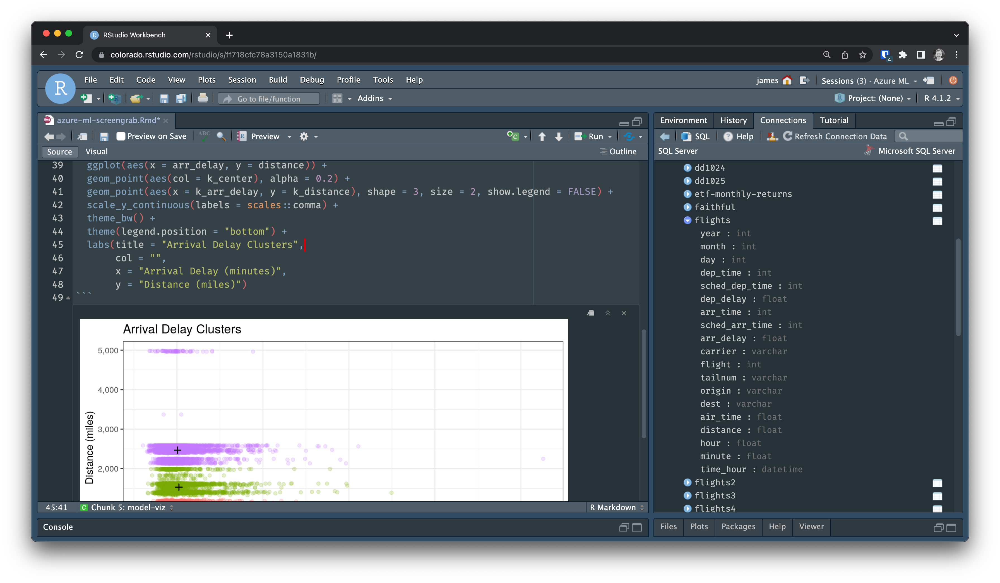

2022-06-01
Cloud platforms enable the machine learning lifecycle with variable scaling, lower start-up costs, and centralized data lakes. Data scientists who use these resources in conjunction with their favorite tools can more efficiently build high-quality models at scale.
RStudio supports cloud strategies in various ways. Our partnerships allow data scientists to operationalize machine learning on their preferred cloud platform using our professional products, built to be the best tools for open source data science.
We’re excited to announce a new partnership with Azure ML to deliver RStudio Workbench on the Azure platform. Data scientists can use the RStudio Workbench they know and love in conjunction with their Azure data sources and other Azure ML capabilities.
RStudio is very pleased to work with the Azure Machine Learning team on this release, as we collaborate to make it easier for organizations to move their open-source data science workloads to the cloud. We are committed to helping our joint customers use our commercial offerings to bring their production workloads to their preferred cloud platforms.
— Tareef Kawaf, President, RStudio PBC
RStudio Workbench is the ideal platform for code-first data science development. With this offering, data scientists can start a single-user instance of RStudio Workbench from within their Azure ML environment as part of the machine learning lifecycle.
With RStudio Workbench, data scientists can:

We look forward to further supporting open-source data science in the cloud. Check out the RStudio for Azure ML product page for more information and to purchase a license.